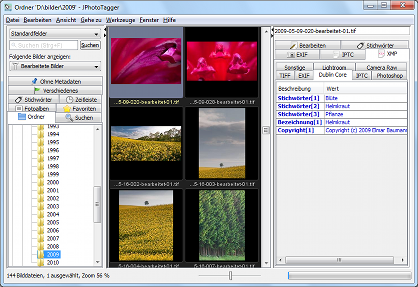

JPhotoTagger's Home Page
With JPhotoTagger You can find fast Your photos through keywords, descriptions and other so called metadata ("tags"). It speeds up adding or editing tags through automatic keyboard input completion and other features.
All tags will be written into XMP sidecar files and JPhotoTagger's database. The images are left untouched. Other applications such as Adobe Photoshop Lightroom can read the tags in the XMP sidecar files into their own databases. JPhotoTagger automatically reads tags from new and changed sidecar files and updates it's database. You can tag Your photos with e.g. Adobe Photoshop Lightroom and JPhotoTagger both even on different operating systems: JPhotoTagger runs on every system where Java is installed.

JPhotoTagger's main window. Click displays a larger version.
{kind=link}
Download
Current version is 0.7.58.
Information
Documentation
Languages
| Language | GUI | Online Help (F1) and PDF manual |
|---|---|---|
| Deutsch (German) | x | x |
| English | x | x |